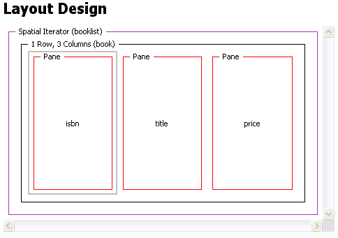

If you need to present sets of results from a dynamic data source, or a layout in which the content changes over time, you can use a format iterator.
Spatial iterators handle tables with both fixed and variable numbers of rows from a database query or a web search engine.
A temporal iterator allows you to create a time-based, sequences for use with the Message Preparation Sever (MPS).
A spatial iterator defines both rows and columns in a single format. You can specify either an exact number of iterations or an upper limit, and also define the order of indexing the generated panes - rows or columns first. A single pane defines the content.
The figure shows how a spatial iterator and its content appear in a Layout editor Design page. The grid contains a row of three panes. Named 'isbn', 'title', and 'price', which act as column template definitions for information in a booklist.

MCS populates this layout from XDIME using the CSS expression function mcs-container-instance() in the theme to refer to the iterated instances of the panes. Refer to XDIME 2 in layouts for a detailed example.
Temporal iterators work in a similar way to spatial iterators. The associated attributes define the transition between presentation of one set of content and the next.
In the preceding example the booklist pane instances could be associated with time intervals. This might not be effective in a text-only presentation, but it would make sense if the content was a series of book cover images.
This kind of indexing can also be used in MPS messages, to present information in a sequence of pages on devices with small displays.
Related topic
Canvas layouts and panes
XDIME 2 in layouts